Lab 3 Report
Introduction
In this lab, we used a time-multiplexed seven-segment display to interface with a matrix keypad, in order to display the last two hexadecimal digits pressed - with the most recent entry appearing on the right. Each press was only recorded once, and the effect of switch bouncing was mitigated in the design implementation. Furthermore, the display does not flicker and is the same brightness regardless of how many segments are displayed.
Design and Testing Methodology
There were various steps in implementing this lab. The first thing that I needed to do was decide how I was going to handle switch-bouncing and decide how I would move in and out of various stages of properly registering a keypad press. In order to decide this, I came up with a design of an FSM that would control how I could transition between states based on a given input. Initially, I decided that I would begin in a SCAN state, where I apply power to the columns and then read the rows, to determine if a button is pressed. As soon as I determine a button is pressed (reading a 1 on the row outputs), I would move to the DEBOUNCE_WAIT state, where I implented my debounce logic. For me, I thought it would be the simplest to have a counter that acts as a delay/buffer for around 100ms, after which the switch connection should stabalize, and debouncing should no longer occur. After this counter is over, then I move onto the CAPTURE state, in which I shift the numbers on the display (the right number shifts to the left, and the new number appears on the right), and I wait in this state until the exact button was pressed is released. During the entire FSM, I have various control signals and enable signals that get asserted to determine what functionality I want to achieve (e.x. triggering a power applying FSM to read my keypad, enabling a counter, updating my display, etc.). Regardless, once the button is released from my CAPTURE state, I move to the DEBOUNCE_WAIT state again in order to mitigate any effects of switch debouncing on the release of a button, and then after the timer completes here, I again move back to SCAN to scan through my keypad until another button is pressed. In transitioning through these states, I had to be careful on what control signals I was asserting, because for example, if we are in the DEBOUNCE_WAIT state, we don’t want to accept any other new button presses on the display.
For this lab, partitioning is an extrememly important aspect of it in order to ensure ease of testing, debugging, and to isolate various features of my design. For this lab, I decided to have a main fsm to transition through the states listed above, a keypad scanner to apply voltage to my columns and try to read my rows - which gets passed through a synchronizer, a number capture module to correlate the rows and columns to a hex number which gets fed into my seve segment display module to turn on segments on my display, as well as clock dividers.
In order to test the design, I isolated each of my modules and tested them individually. For my combinational logic, it was straightforward because I generated all possible input signals and ensured the output from my module matched what I was expecting to read. For my other modules which are based on more asynchronus inputs, I had to turn on and off, and toggle my signals at variosu times to test that on a certain input, I move or do not move to a particular state. Or, if I am in a state that should not be changing based on an input, that it doesn’t do so when I apply an input. For example, for my state machine described above, I would first make sure that when I begin, I start off in the SCAN state, and when I read a row with a 1 in it, I move onto the next state. And then once I am in this state, I try changing the row, but it does not change states, because now it should be in the DEBOUNCE_WAIT state, where it waits for a timer to reach the value, and until then it essetially freezes the system. Then, after the timer is completed, I check that we move on to the CAPTURE state, where I check that the new number is on the right side of the segment, and the previous input is shifted to the left. In my top level module, I also do something similar, but using the clock signal that I pass to everything, and instead of manually having to set some of the inputs, the other modules can take care of a lot of that for me. There would be times in my testbench where I run my clock for multiple cycles, and either make sure the system is retained in it’s state, or that after a period of time it has transitioned to the next state.
I made all my testbenches assert based so it was easy to check for various inputs given an input that I apply at a specific time.
I made sure to calculate appropriate resistor values based on the maximum drivable current as well for all my pins.
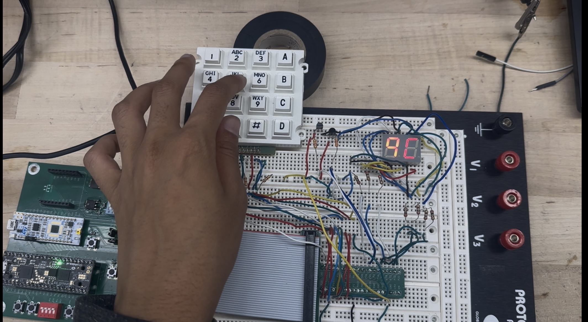
Figure 1 shows the physical implementation the breadboard with the time-multiplexed segment visible, along with the keypad wired up.
Technical Documentation:
The source code for the project can be found in the associated Github repository
Block Diagram
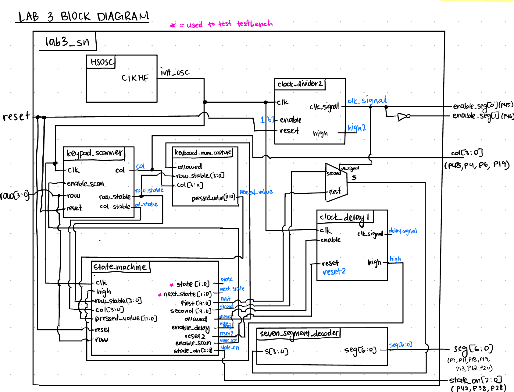 The block diagram in Figure 2 demonstrates the overall design and architecture of the design. The top-level module incldes seven sub-modules - the HSOSC (high-speed oscillator block), two clock dividers (one for the time multiplexed segment, and one for the debounce timer), the keypad scanner to read button presses, the number capture to transform the pressed row and column to the keypad hex number, the main state machine, and the seven_segment module in order to convert hex digits to seven segments. We can see the internal logic of the muxes as well, in order to multiplex the values given to the seven-segment module, based on the generated clock signal.
Schematic
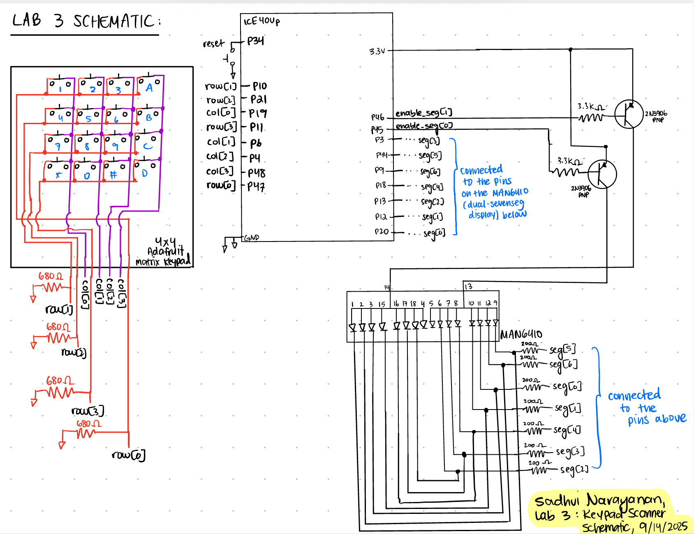 Figure 3 demonstrates the physical layout of the design. We have our keypad and a visual of how it is wired with pull down resistors on the input pins into the FPGA, so if we are not driving a signal through a button press we read a 0 (since my system is active high). We see that the inputs into my FPGA from the matrix keypad is wired to a pull down 680-ohm resistor. I didn’t do much of a calculation for this, since I just needed a resistor to pull down my system to ground so my signals wouldn’t float, without it being too large to act as a brick wall to the current. We can also see my reset push-button, PNP transistors which was calculated with a 3.3k-ohm resistor on the base, and my seven-segment display, where each segment had a current-limiting resistor of 200-ohms.
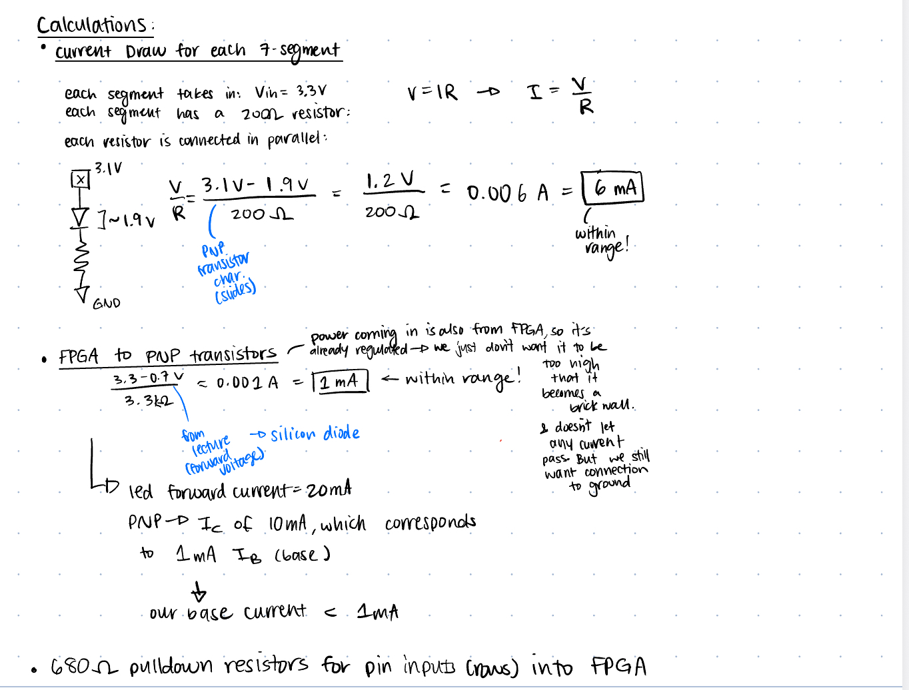
In Figure 4 we can see all the calculations performed to ensure we are not drawing more current that possible from the FPGA pins - 8mA, and not driving floating signals to the FPGA.
Finite State Machines and Transition/Output Tables and Tradeoffs
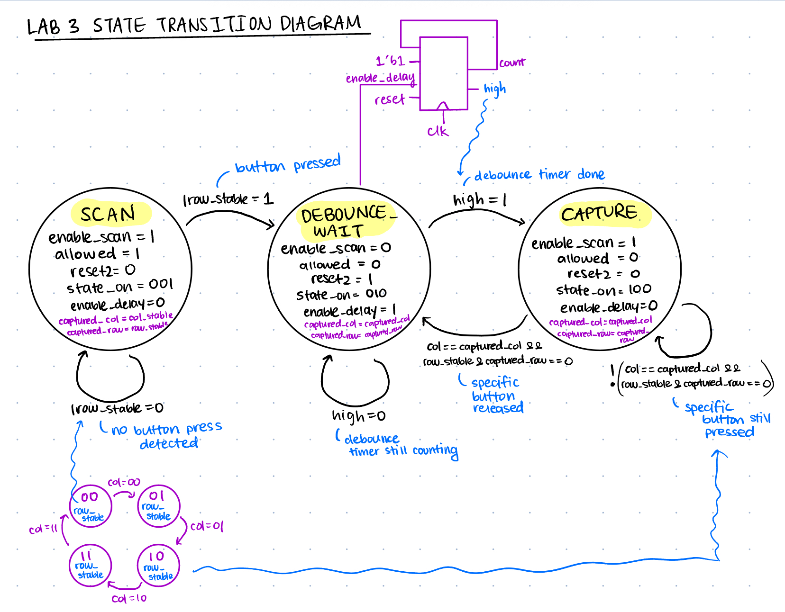
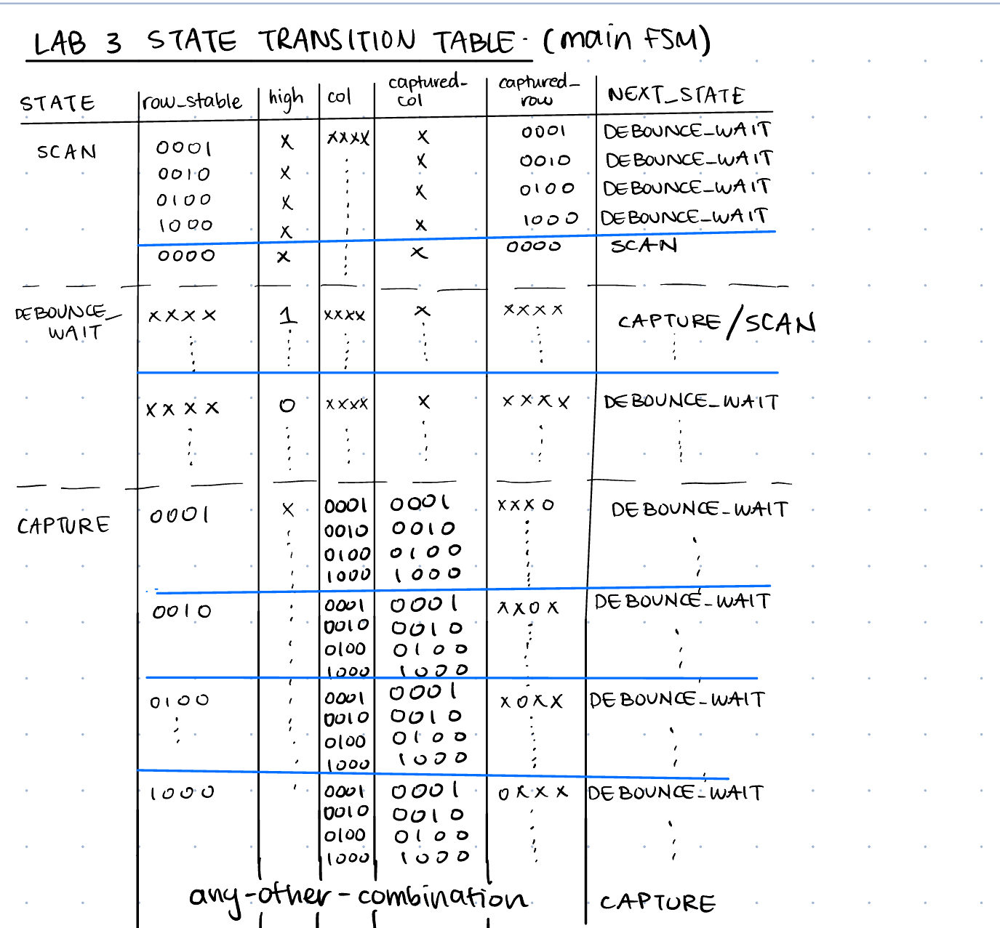
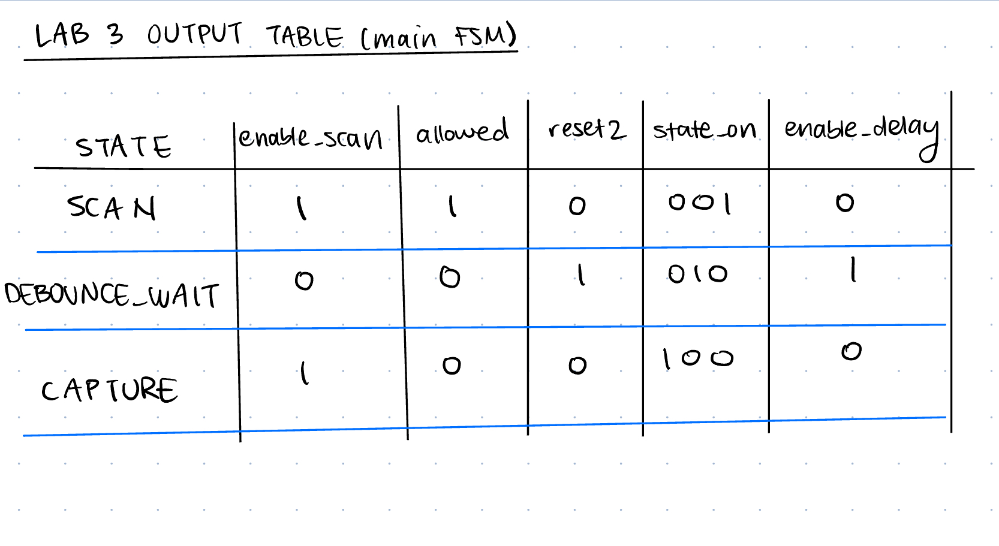
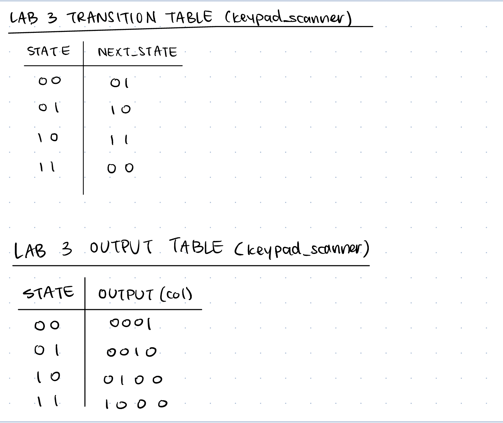
In Figure 5, we can see the main FSM diagram going through SCAN, DEBOUNCE_WAIT, and CAPTURE. In Figure 6, we see the state transition diagram table. In Figure 7, we have the main FSM output table. In Figure 8, we have the Keypad scanner FSM transition table and output table. I didn’t include a diagram of the counter FSM since that is self-explanatory.
Tradeoffs: There may be some tradeoffs with my strategy and others, right from how I partioned my blocks versus how my debouncing strategy could have been implented. For debouncing, I have one counter that counts to a fixed amount, and after this it assumes that debouncing affects are mitigated, and proceeds to the next stage. However, if I have a partcicularly bad switch which debounces for longer, then my strategy might not account for that time interval, and could fail. Additionally, if I have the same design, but have a switch with almost no debouncing, then I could be waiting for longer than I need to be. One design tradeoff I kept here was consistency and simplicity of the design - I could have alternatively, had a counter which checks how many consecutive high’s I get, and if it passes a certain threshold, then I would move on. However, this implementation also has the limitation of setting the appropriate threshold. Additionally, I have one state which does all the scanning logic, whereas I could have 4 different states for scanning, each of which applies power to one row. My strategy is easy in the sense of I turn on an enable in my SCAN state and it hits all the cols to read the rows through another FSM. This design gives me another piece of hardware potentially, with an external counter - but it is really small and should not have much of an effect, compared to 4 state counters within my main FSM. However, in the CAPTURE state, when I need to check if a button is released, I essentially only need to apply power to the column in which I detected the press in, so have a single state to account for putting power to just that column would have been easy overall, rather than having a conditional, but overall I don’t see much of a design hit with this approach. I also like how I have enables which I set as output signals in my FSM, and it automatically triggers a clock counter/clock divider module to take care of it, and then when that module asserts a high, it continues. This makes the design separation really easy, and a lot easier to test, debug, and isloate.
Results and Discussion
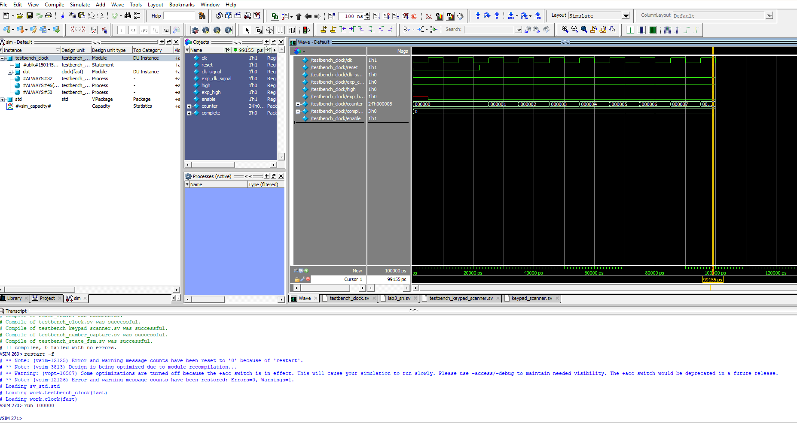
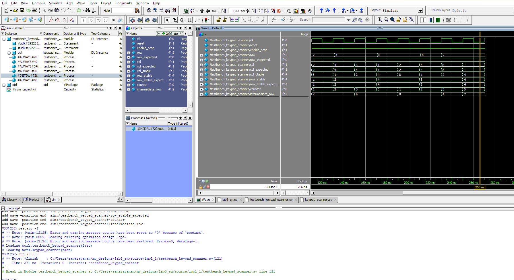
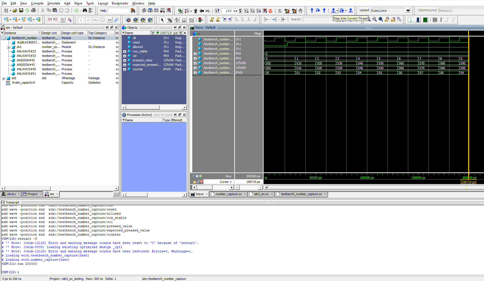
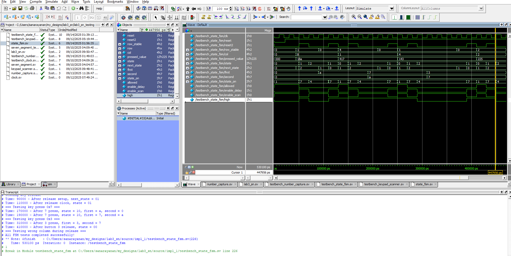
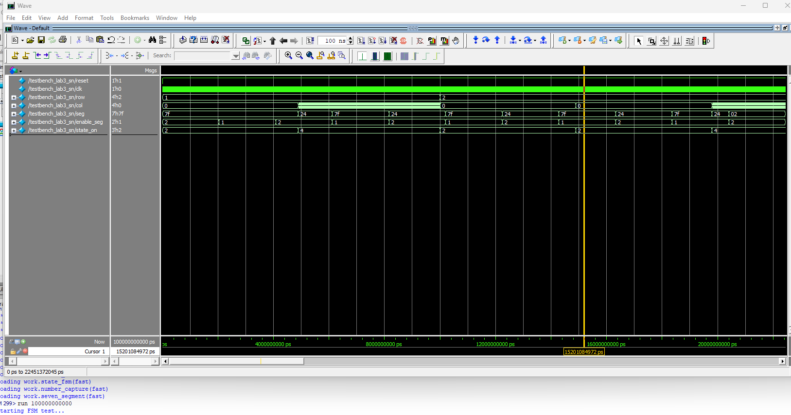
I was able to accomplish all of the prescribed tasks in this project. I also met all the intended design objectives, and was able to check off all the components in the spec, along with the excellence components.
Figure 9 shows a screenshot of the QuestaSim Simulation of the clock module, which we can see toggles at a frequency we set and asserts a high signal. Figure 10 shows our keypad scanner which toggles through the columns (applying power to them), and then reads the row_stable and col_stable two clock cycles after they were captured since they go through a 2-flop synchronizer. Figure 11 shows the testbench designed for the combinational logic to convert the rows and columns to a 4-digit hex number on the keypad. Figure 12 shows the testbench waveforms for the FSM which toggles through the states of my logic. And Figure 13 shows the testbench for the top level module, connecting all the compnents together.
If I was given more time, I would have tried to possibly come up with a new strategy for debouncing, or could have tried to be more precise with when I leave the debouncing stage instead of just using a fixed time. Additionally, there could have been more ways to partition the design.
Conclusion
The overall design, after all the testing, successfully time-multiplexes the seven-segment decoder with the last two keypad entries from the matrix keypad, and it accounts for switch debouncing on both the press and release of a button. Additionally, it does not lock up when multiple buttons are pressed, and only accepts new presses once the pressed key is released. Every segment is equally as bright, and meets the specifications listed. I spent a total of 30 hours working on this lab - I also spent a lot of time helping others.
AI Prototype Summary
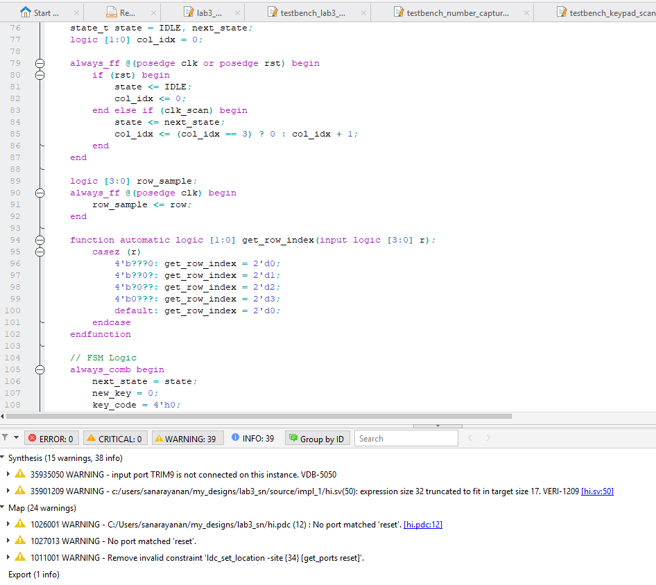
Figure 14 shows the result of entering the prompt into ChatGPT - this seems to have synthesized, and has the same states as me, but some of the transition conditions are really interesting, and I definitely feel like logically there is some issue with it moving to the states at the wrong time, because it hasn’t thought through the exact logic for transitioning. Modularizing the prompts gave it more space to have it be more detailed in some of the logic implementation, and made it easier to understand, but overall in the initial prompt, it wasn’t that difficult to follow. However, the last prompt was easier to read, and it was more similar to a more traditional transition and fsm. Prototype A, did not modularize the design in the way I thought it would - but it had the main ways I broke mine up, however I had more modules. It didn’t make any illogical splits, but overall it was near and clear. ChatGPT used clog2 for a counter logic which was something I did not think about, and it created functions within the module which was something I don’t have exposure to.
Overall, I would rate the quality of this code pretty good since it seems to be optimal in all the assignments, module interaction, and clock multiplexing that it does. The AI code synthesized all three times, I tried it, however the later versions were more clean. In terms of warning messages, I just got the expression size 32 bits truncated to fit in target size 16, but I have also been getting this warning message as well.